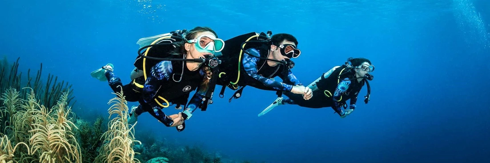
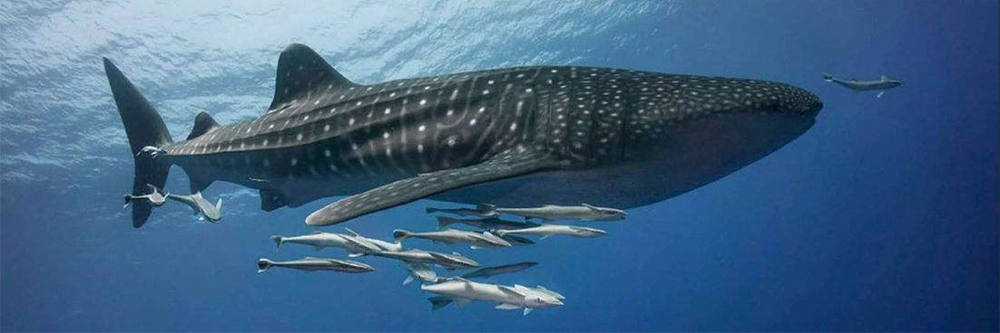
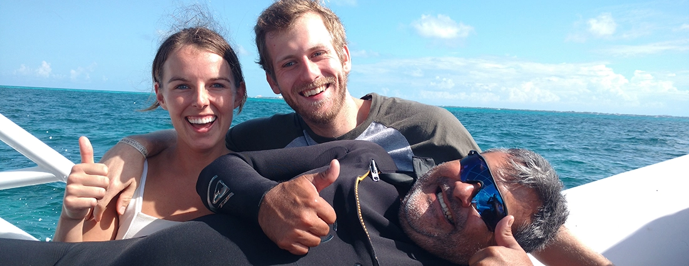
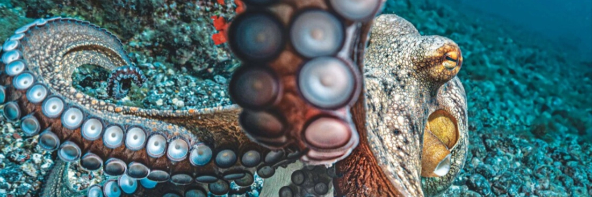

The Recreational Divers Ulitimate Checklist
Whether you've booked either a scuba course or are an already certified diver, you may be wondering what you should bring with you on the day of your dive. This short article will go through exactly what you can and can't bring on your adventure with us and why. If you aren't interested in the whys and hows, you can also simply use the checklist below.
General Items
Scuba Equipment
Whether you've booked either a scuba course or are an already certified diver, you may be wondering what you should bring with you on the day of your dive. This short article will go through exactly what you can and can't bring on your adventure with us and why. If you aren't interested in the why's and hows, you can also simply click here to skip to the checklist at top of this page.
Dive Certification
Cthulhu Divers follows the Professional Association of Diving Instructors regulations which requires that we check all divers either have a certification or at least undergo the one day Discover Scuba Diving Course which, upon completion, will allow you dive under the supervision of a PADI instructor. If you have lost or forgotten your certification, please let us know and send us your full name, date of birth and your diving certification agency such as PADI, SSI, NAUI, etc. We can then use this info to check with the respective agency for your certification number before you arrive. It is especially important to notify us if you are diving over the weekend as many of these agencies are closed during this time and there will be no way for us to check until they reopen.
National Park & Dock Fees (included in your tour)
The majority of Cancun's dive sites are based within one of the three national parks which are located in the waters around Cancun. The money raised is then used by the parks, in conjunction with Conanp (Comisión Nacional de Áreas Naturales Protegidas - a Mexican government environmental agency), to preform the following important tasks:
A brief summary of what your national park fee will fund:
- Placing of buoys at each dive site: Not only does this make it easier for our captains to find each site, they also reduce human impact on the environment as the boats are able to latch onto these static lines, meaning we never have to drop an anchor and run the risk accidentally damaging any coral below.
- Conservation: Whilst on you dive, you may come across what looks like a PVC pipe sticking out of the reef. These were used by park staff to “reseed” the coral after hurricane Wilma hit Cancun back in 2005. Furthermore, you may see divers with hammers and ropes whilst diving on our reefs. These divers are taking measurements and obtaining samples from specific species of coral which they send back to labs for study. These samples are then used to determine the health of the reef system so that adjustments can be made to the reservation efforts of the park staff. At the time of writing this article, the reefs are currently healthy and there are no restrictions placed on the number of divers allowed on the reef.
- Training: Cthulhu Divers requires all staff, including instructors, divemasters, captains and sailors, to attend ongoing training with Semarnat. At these training courses we learn about the various species of fish, mammals and corals found in the park. We are also updated on the health of the reef and any new rules and regulations pertaining to the parks. We also undergo an examination every two years and are all certified as park guides.
- Park wardens: During your dive tour, we may be approached by another boat which will have a conversation with our staff and check that we are all meet regulations. They may also board the boat to make sure that none of the divers have taken any mementos from the bottom of the ocean; remember this a protected area with regulations similar what you will find back home in parks such as Yellow Stone or Banff, so the removal of even the smallest of shells may lead to a mean fine of approximately U$950 for you and a loss of our permission to dive in the area for us.
The dock fee is tax which is paid to local authorities for the general upkeep of the respective launch site and differs from dock to dock. The good news is that both the dock fee and national park fee are both included in the price of your dive tour. In fact, Cthulhu Divers only offers one tour where the dock fee needs to be paid by you, the customer. This is our seasonal (March to mid-September) Whale Shark Snorkeling Tour where the dock requests that the fee be paid in cash on the day.
Dive Knives and Gloves
As we tend to dive in a protected area, the use of dive knives and gloves are strictly prohibited. If you are taking a PADI Open Water course with us, you will notice that some courses may list dive knives as required equipment. However PADI also requires us to abide to local regulations and, as there are no dive skills which need be practiced with a knife, you are still able to complete as normal.
Glasses and Contact Lenses
Unfortunately, as you will be wearing a mask, you will not be able to wear normal glasses. You can however use contact lenses without issue. Another option for avid divers, is to invest in a prescription mask. It is also worth remembering that as light travels through water into the air inside your mask, it is bent and everything appears significantly larger/closer so in most cases you should actually find it easier to see things more clearly under the water than you would on land.
Dive Equipment
All required dive equipment is included in your tour. If you have your own dive equipment with you, we recommend that you bring it with you as it always safer and more fun to dive with equipment which you are familiar with. Your instructor or divemaster also has a couple of tips and tricks to help those of you who have been plagued with a foggy mask. So bring it along and we will be happy to help.
The water temperature in the ocean varies seasonally between 78° and 84° Fahrenheit (25° and 29° Celsius) so wetsuits aren't necessary but are available to rent (U$15). For cenote, cave and cavern diving, where the water temperature is a constant 73° Fahrenheit (22° Celsius), a wetsuit is included in your tour.
Camera
If you have a underwater or action camera, you are more than welcome to bring it along. We only ask that you don't use it during your decent as you will need both hands to equalize your ears and adjust your position in the water.
Have you ever dove with a camera before and noticed that the colors didn't appear as bright and stunning as you remember them? If this is the case you may wish to purchase either red or yellow filter for your camera. Usually you will get more use out of a red filter as they work better on dives great than 20 feet (6 meters). Sadly these filters do have a down side as they also lead to your photos appearing a bit darker than normal and are not actually recommended on dives greater than 60ft (20m). Pro tip: a small snip of cellophane can be used in a pinch as a quick MacGyver solution if you cant find a filter to fit your camera.
Cthulhu Divers also offers a photo service on most of our tours where one of our staff members join the dive to snap a bunch of photos of you and your friends under the water. Our cameras are specifically made for underwater photos which means that they don't require any filters as they do all the color correction digitally so everything appears in bright, truer colors when compared a standard Go Pro type action camera. Please bear in mind that we have to register and pay for a license to use cameras in the park so your dive guide may not be able to take photos of you using your own camera a certain locations such as the underwater museum but please don't be shy to ask before hand.
Sunblock
Again as we are diving inside a protected area, any diver entering the water is required to use a sunblock which has a reef friendly certification printed on the bottle. You'll also be asked to rub the sunblock into your skin and not enter the water covered in the paste.
Standard sunblock unfortunately washes off our skin and can not only toxify the water but may also land on coral where it blocks off sunlight which is essential for photosynthesis to take place in the algae which live inside the said coral.
If you decide to enjoy any of our non-diving tours such as Xplor, Xcaret or even Whale Shark Snorkeling, you may also be required to use a reef friendly sunblock so it really is a good investment to get the most out of your time here in Cancún.
Swimsuits, clothes and footwear
It might sound unbelievable but yes, we have had clients arrive without bringing any sort of swimwear. In this case you may choose to rent a wetsuit instead. Otherwise a standard pair of surfer style board shorts will suit most lads. For the gals a good, snug bikini is fine but a halter neck style is preferred to prevent any accidental nip-slips. Alternatively you can also use a simple, run-of-the-mill t-shirt.
A comfortable pair of shorts, a shirt and a pair of flip-flops which can be stored away easily are a great choice for the boat as we travel to and from each dive site.
Seasickness Medication
Local laws prevent Cthulhu Divers from recommending, offering or selling seasickness medication. If you suffer from motion sickness, please consult with a medical professional before your dive. Common over the counter drugs such as dimenhydrinate (Dramamine) and cyclizine (Marezine) are available at Mexican chemists but dont contain as much active ingredients as their US and Canadian counterparts so, if possible, get yours before you leave home.
If you are not a fan of taking pharmaceuticals, you may also look into obtaining Sea Band Acupressure Pads before you arrive. I haven't tried them myself but they have often been recommended as a great alternative to standard motion sickness medication.
Towels
The weather here tends to be really hot and humid so generally we don't have towels available as they tend to be a trip hazard on the boat. Feel free however to bring a hotel towel for use back at the dock if you wish.
Alcohol
During the Open Water Course a diver learns why one shouldn't drink alcohol directly before or after diving. Among other more obvious reasons, alcohol thins out a divers blood and makes them more susceptible to Decompression Sickness. We understand that certain dive companies in other parts of the world offer these beverages after their dives but Cthulhu Divers has decided to keep to both PADI and national regulations. At the end of the day, as an adult you are at liberty to bring your own booze. In this case please understand that your dive guide is required to remind you of the risks, however small, which drinking alcohol can lead to.
IMPORTANT: IF YOU ARRIVE DRUNK, OR DRINK ALCOHOL BEFORE ENTERING THE WATER, YOU WILL NOT BE ALLOWED INTO THE WATER AND DEPOSIT WILL BE FORFEIT. WE TAKE CUSTOMER SAFTY VERY SERIOUSLY AND HAVE AN ABSOLUTE ZERO TOLERANCE POLICY TOWARDS DIVING UNDER THE INFLUENCE SO PLEASE KEEP THIS IN MIND!
Cash
Generally you don't need to bring cash unless you need to settle an outstanding payment with us. Nevertheless if you wish to purchase photos or tip our staff, its a good idea to bring some extra cash with when you come. Most stores around our docks accept both Mexican Pesos and US Dollars. Cthulhu Divers itself accepts all major currencies at the exchange rate offered by the San Jorge bureau de change on the day.